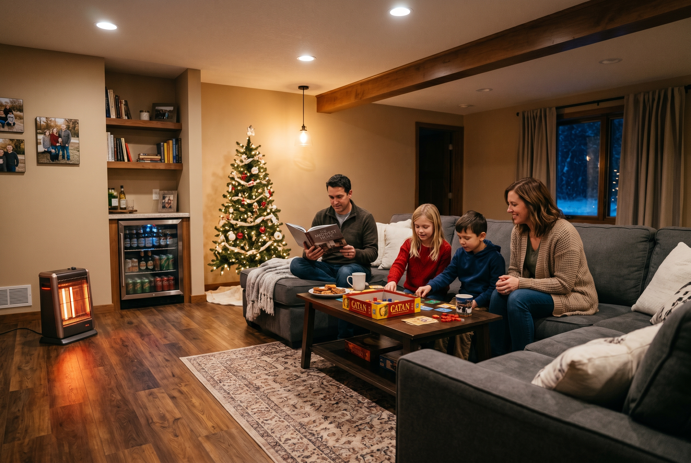
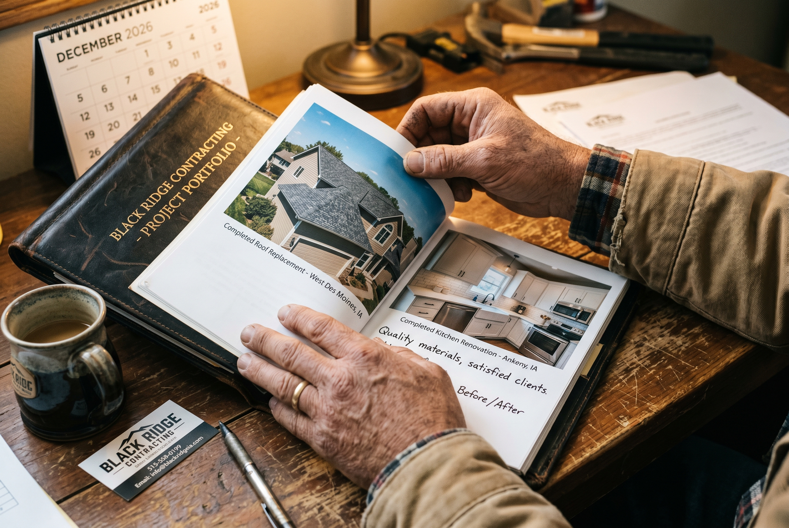

Published December 28, 2026 • By Black Ridge Contracting
2026 was a year. We crossed our 200+ project milestone, watched material prices stabilize after three years of swings, and saw a noticeable shift in what Central Iowa homeowners were asking for. Here's the contractor's read on what happened in 2026 Iowa home improvement and what it tells us about 2027.
The Big Shifts We Saw in 2026
Aging in place jumped to the top of the request list. Walk in shower conversions, primary bath main floor adds, and step free entries all moved from occasional projects to weekly conversations. Iowa's demographics are catching up to national trends, and the boomers who built equity in their homes are deciding to stay rather than downsize.
Material prices flattened. After three years of post pandemic swings, asphalt shingles, fiber cement siding, and engineered lumber all stabilized in 2026. Quote validity stretched from 30 days back to 60 to 90 days on most contracts. Predictable pricing means homeowners can actually plan.
Energy efficiency became a real budget category. The federal tax credits for heat pumps, insulation, and windows finally translated into homeowner action this year. A typical Iowa home improvement project in 2026 included an energy efficiency line item that wasn't there in 2023.
Basement finishing surged. With home prices high enough that moving up costs more than ever, homeowners chose to add usable square footage in the basement instead. Basement finishing was our most requested service of 2026.
Best Performing Projects of 2026
Looking back at completed projects, these are the ones that consistently delivered on what homeowners wanted:
- Walk in shower conversions. Aging in place plus aesthetic upgrade in one project. High homeowner satisfaction every time.
- Basement finishing with bathroom. Recovered 75 percent or more on appraisal across the Des Moines metro. Strong resale value.
- Roof replacements with architectural shingles. Standard project for most Central Iowa homes, delivered consistent quality and predictable cost.
- Kitchen refreshes under $25,000. Cabinet refinishing plus counter swap plus lighting upgrade. The highest ROI move in the kitchen.
- Fiber cement siding replacements. Better impact resistance for Iowa hail than vinyl, longer warranty, holds paint 15 years.

The Lessons That Stuck
Some of the lessons that kept showing up in 2026, in conversations with homeowners and on jobsites:
The cheapest contractor almost never wins. Not in cost, not in satisfaction. The homeowners who picked the cheapest bid in 2026 were more likely to call us in November to fix something that contractor did wrong than to recommend their original choice.
Honest scoping beats clever marketing. The renovations that delivered on time and on budget were almost universally the ones with a detailed written scope from day one. Vague scope leads to vague projects.
Iowa weather is not a contractor's fault. Schedule buffer for weather is real. Homeowners who built that buffer into their expectations were happy. Ones who didn't were frustrated even when projects finished on time.
The right contractor is local. Out of town crews working Iowa storm chase jobs in 2026 generated more complaint calls and warranty issues than any other category. Local contractors who'll still be answering the phone in five years deliver better outcomes.
What's Coming for 2027
A few things we're watching going into 2027:
- Continued aging in place demand. This isn't a trend, it's a demographic shift. Primary bath updates and main floor accessibility will keep growing.
- Higher end finish expectations. Iowa buyers in 2027 expect what would have been high end finishes in 2020. The bar keeps rising.
- Backlog from deferred projects. Homeowners who put off 2024 and 2025 projects are coming back to them. Expect tight spring schedules.
- Insurance carrier scrutiny on older roofs. Iowa carriers are tightening coverage on roofs over 15 years. Pre emptive roof replacement will be a bigger 2027 category.

Thank You, Central Iowa
To every Central Iowa homeowner who trusted Black Ridge with their roof, siding, kitchen, bathroom, basement, or concrete in 2026, thank you. To the realtors who referred us. To the contractors and suppliers we partnered with. To Dad for laying the foundation of this business in 2020 that we still build on. This is your business too.
2027 is going to be a great year. If you have a project in mind, the planning conversations are happening now. See our services or call (515) 219-4654 to set up a 2027 walkthrough.
And if you're thinking about selling rather than renovating, our team at Heberer Homes handles Central Iowa sellers directly with cash offers.
See you in 2027.